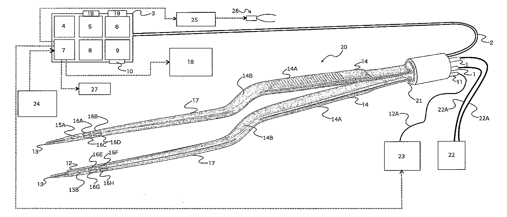
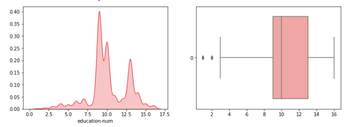

Projects & Contributions
Here's a collectection of some of my recent projects.

AWS IoT Streaming
Streaming IoT senor data using AWS toolchain.

Gait Trait Analyzer
Contactless gait biometric extraction using a virtual 3D skeleton to construct models in real time.

Smart Forceps
Stream feedback data to improve motor skills for surgeons.

Income Classification
Testing & tuning classification algorithms based on public income database.